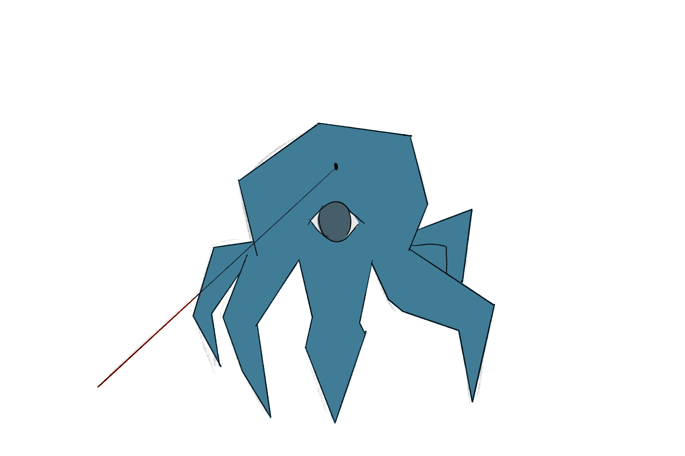

Pragmanese
The Pragma are extremely context-dependent with their communication, which is entirely relative. They use words like left and right, which are defined relative to the laser pointer they use to define things.
Their language and species name come from the word "pragmatics", which is a field of linguistics dedicated to the exact thing they are limited to using, context.
